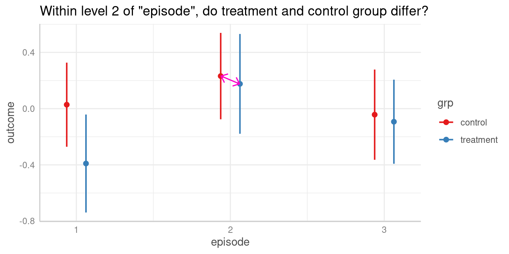
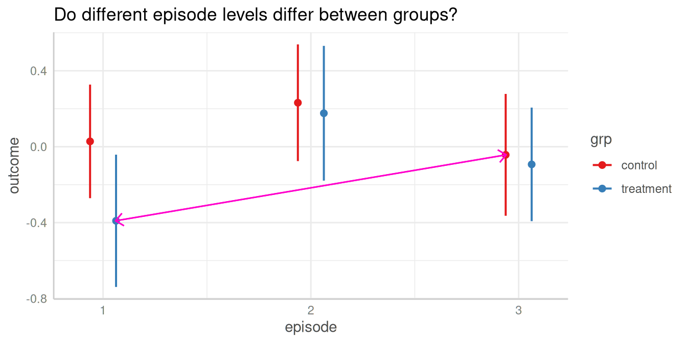
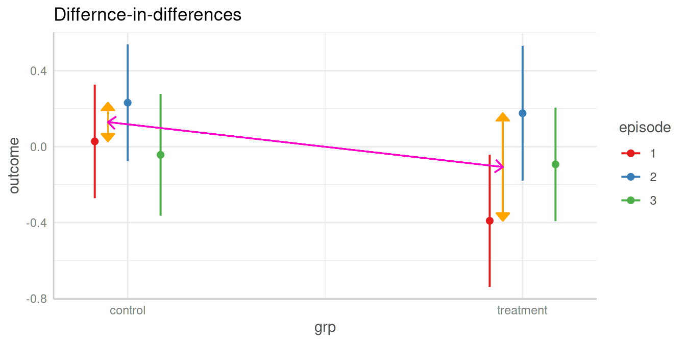

Significance Testing Of Differences Between Predictions I: Contrasts And Pairwise Comparisons
Source:vignettes/introduction_comparisons_1.Rmd
introduction_comparisons_1.RmdThis vignette is the first in a 4-part series:
Significance Testing of Differences Between Predictions I: Contrasts and Pairwise Comparisons
Hypothesis testing for categorical predictors
A reason to compute adjusted predictions (or estimated marginal means) is to help understanding the relationship between predictors and outcome of a regression model. In particular for more complex models, for example, complex interaction terms, it is often easier to understand the associations when looking at adjusted predictions instead of the raw table of regression coefficients.
The next step, which often follows this, is to see if there are statistically significant differences. These could be, for example, differences between groups, i.e. between the levels of categorical predictors or whether trends differ significantly from each other.
The ggeffects package provides a function,
test_predictions(), which does exactly this: testing
differences of adjusted predictions for statistical significance. This
is usually called contrasts or (pairwise) comparisons,
or marginal effects (if the difference refers to a one-unit
change of predictors). This vignette shows some examples how to use the
test_predictions() function and how to test wheter
differences in predictions are statistically significant.
First, different examples for pairwise comparisons are shown, later we will see how to test differences-in-differences (in the emmeans package, also called interaction contrasts).
Note: An alias for test_predictions() is
hypothesis_test(). You can use either of these two function
names.
 Summary of most important points:
Summary of most important points:
- Contrasts and pairwise comparisons can be used to test if differences of predictions at different values of the focal terms are statistically significant or not. This is useful if "group differences" are of interest.
-
test_predictions()calculates contrasts and comparisons for the results returned bypredict_response(). -
It is possible to calculate simple contrasts, pairwise comparisons, or interaction contrasts (difference-in-differences). Use the
testargument to control which kind of contrast or comparison should be made. - If one or more focal terms are continuous predictors, contrasts and comparisons can be calculated for the slope, or the linear trend of those predictors.
Within episode, do levels differ?
We start with a toy example, where we have a linear model with two categorical predictors. No interaction is involved for now.
We display a simple table of regression coefficients, created with
model_parameters() from the parameters
package.
library(ggeffects)
library(parameters)
library(ggplot2)
set.seed(123)
n <- 200
d <- data.frame(
outcome = rnorm(n),
grp = as.factor(sample(c("treatment", "control"), n, TRUE)),
episode = as.factor(sample(1:3, n, TRUE)),
sex = as.factor(sample(c("female", "male"), n, TRUE, prob = c(0.4, 0.6)))
)
model1 <- lm(outcome ~ grp + episode, data = d)
model_parameters(model1)
#> Parameter | Coefficient | SE | 95% CI | t(196) | p
#> ---------------------------------------------------------------------
#> (Intercept) | -0.08 | 0.13 | [-0.33, 0.18] | -0.60 | 0.552
#> grp [treatment] | -0.17 | 0.13 | [-0.44, 0.09] | -1.30 | 0.197
#> episode [2] | 0.36 | 0.16 | [ 0.03, 0.68] | 2.18 | 0.031
#> episode [3] | 0.10 | 0.16 | [-0.22, 0.42] | 0.62 | 0.538Predictions
Let us look at the adjusted predictions.
my_predictions <- predict_response(model1, "episode")
my_predictions
#> # Predicted values of outcome
#>
#> episode | Predicted | 95% CI
#> ---------------------------------
#> 1 | -0.08 | -0.33, 0.18
#> 2 | 0.28 | 0.02, 0.54
#> 3 | 0.02 | -0.24, 0.28
#>
#> Adjusted for:
#> * grp = control
plot(my_predictions)
We now see that, for instance, the predicted outcome when
espisode = 2 is 0.28.
Pairwise comparisons
We could now ask whether the predicted outcome for
episode = 1 is significantly different from the predicted
outcome at episode = 2.

To do this, we use the test_predictions() function. This
function, like predict_response(), either accepts
the model object as first argument, followed by the focal
predictors of interest, i.e. the variables of the model for which
contrasts or pairwise comparisons should be calculated; or you
can pass the results from predict_response() directly into
test_predictions(). This is useful if you want to avoid
specifying the same arguments again.
By default, when all focal terms are categorical, a pairwise
comparison is performed. You can specify other hypothesis tests as well,
using the test argument (which defaults to
"pairwise", see ?test_predictions). For now,
we go on with the simpler example of contrasts or pairwise
comparisons.
# argument `test` defaults to "pairwise"
test_predictions(model1, "episode") # same as test_predictions(my_predictions)
#> # Pairwise comparisons
#>
#> episode | Contrast | 95% CI | p
#> -----------------------------------------
#> 1-2 | -0.36 | -0.68, -0.03 | 0.031
#> 1-3 | -0.10 | -0.42, 0.22 | 0.538
#> 2-3 | 0.26 | -0.06, 0.58 | 0.112For our quantity of interest, the contrast between episode 1-2, we
see the value -0.36, which is exactly the difference between the
predicted outcome for episode = 1 (-0.08) and
episode = 2 (0.28). The related p-value is 0.031,
indicating that the difference between the predicted values of our
outcome at these two levels of the factor episode is indeed
statistically significant.
Since the terms argument in
test_predictions() works in the same way as for
predict_response(), you can directly pass “representative
values” via that argument (for details, see this
vignette). For example, we could also specify the levels of
episode directly, to simplify the output:
test_predictions(model1, "episode [1:2]")
#> # Pairwise comparisons
#>
#> episode | Contrast | 95% CI | p
#> -----------------------------------------
#> 1-2 | -0.36 | -0.68, -0.03 | 0.031In this simple example, the contrasts of both
episode = 2 and episode = 3 to
episode = 1 equals the coefficients of the regression table
above (same applies to the p-values), where the coefficients refer to
the difference between the related parameter of episode and
its reference level, episode = 1.
To avoid specifying all arguments used in a call to
predict_response() again, we can also pass the objects
returned by predict_response() directly into
test_predictions().
pred <- predict_response(model1, "episode")
test_predictions(pred)
#> # Pairwise comparisons
#>
#> episode | Contrast | 95% CI | p
#> -----------------------------------------
#> 1-2 | -0.36 | -0.68, -0.03 | 0.031
#> 1-3 | -0.10 | -0.42, 0.22 | 0.538
#> 2-3 | 0.26 | -0.06, 0.58 | 0.112Does same level of episode differ between groups?
The next example includes a pairwise comparison of an interaction between two categorical predictors.
model2 <- lm(outcome ~ grp * episode, data = d)
model_parameters(model2)
#> Parameter | Coefficient | SE | 95% CI | t(194) | p
#> -----------------------------------------------------------------------------------
#> (Intercept) | 0.03 | 0.15 | [-0.27, 0.33] | 0.18 | 0.853
#> grp [treatment] | -0.42 | 0.23 | [-0.88, 0.04] | -1.80 | 0.074
#> episode [2] | 0.20 | 0.22 | [-0.23, 0.63] | 0.94 | 0.350
#> episode [3] | -0.07 | 0.22 | [-0.51, 0.37] | -0.32 | 0.750
#> grp [treatment] × episode [2] | 0.36 | 0.33 | [-0.29, 1.02] | 1.09 | 0.277
#> grp [treatment] × episode [3] | 0.37 | 0.32 | [-0.27, 1.00] | 1.14 | 0.254Predictions
First, we look at the predicted values of outcome for all combinations of the involved interaction term.
my_predictions <- predict_response(model2, c("episode", "grp"))
my_predictions
#> # Predicted values of outcome
#>
#> grp: control
#>
#> episode | Predicted | 95% CI
#> ----------------------------------
#> 1 | 0.03 | -0.27, 0.33
#> 2 | 0.23 | -0.08, 0.54
#> 3 | -0.04 | -0.36, 0.28
#>
#> grp: treatment
#>
#> episode | Predicted | 95% CI
#> ----------------------------------
#> 1 | -0.39 | -0.74, -0.04
#> 2 | 0.18 | -0.18, 0.53
#> 3 | -0.09 | -0.39, 0.21
plot(my_predictions)
Pairwise comparisons
We could now ask whether the predicted outcome for
episode = 2 is significantly different depending on the
level of grp? In other words, do the groups
treatment and control differ when
episode = 2?

Again, to answer this question, we calculate all pairwise comparisons, i.e. the comparison (or test for differences) between all combinations of our focal predictors. The focal predictors we’re interested here are our two variables used for the interaction.
# we want "episode = 2-2" and "grp = control-treatment"
test_predictions(model2, c("episode", "grp"))
#> # Pairwise comparisons
#>
#> episode | grp | Contrast | 95% CI | p
#> ---------------------------------------------------------------
#> 1-2 | control-control | -0.20 | -0.63, 0.23 | 0.350
#> 1-3 | control-control | 0.07 | -0.37, 0.51 | 0.750
#> 1-1 | control-treatment | 0.42 | -0.04, 0.88 | 0.074
#> 1-2 | control-treatment | -0.15 | -0.61, 0.32 | 0.529
#> 1-3 | control-treatment | 0.12 | -0.30, 0.54 | 0.573
#> 2-3 | control-control | 0.27 | -0.17, 0.72 | 0.225
#> 2-1 | control-treatment | 0.62 | 0.16, 1.09 | 0.009
#> 2-2 | control-treatment | 0.06 | -0.41, 0.52 | 0.816
#> 2-3 | control-treatment | 0.32 | -0.10, 0.75 | 0.137
#> 3-1 | control-treatment | 0.35 | -0.13, 0.82 | 0.150
#> 3-2 | control-treatment | -0.22 | -0.70, 0.26 | 0.368
#> 3-3 | control-treatment | 0.05 | -0.39, 0.49 | 0.821
#> 1-2 | treatment-treatment | -0.57 | -1.06, -0.07 | 0.026
#> 1-3 | treatment-treatment | -0.30 | -0.76, 0.16 | 0.203
#> 2-3 | treatment-treatment | 0.27 | -0.19, 0.73 | 0.254For our quantity of interest, the contrast between groups
treatment and control when
episode = 2 is 0.06. We find this comparison in row 8 of
the above output.
As we can see, test_predictions() returns pairwise
comparisons of all possible combinations of factor levels from our focal
variables. If we’re only interested in a very specific comparison, we
have two options to simplify the output:
We could directly formulate this comparison as
test. To achieve this, we first need to create an overview of the adjusted predictions, which we get frompredict_response()ortest_predictions(test = NULL).We pass specific values or levels to the
termsargument, which is the same as forpredict_response().
Option 1: Directly specify the comparison
# adjusted predictions, compact table
test_predictions(model2, c("episode", "grp"), test = NULL)
#> episode | grp | Predicted | 95% CI | p
#> ------------------------------------------------------
#> 1 | control | 0.03 | -0.27, 0.33 | 0.853
#> 2 | control | 0.23 | -0.08, 0.54 | 0.139
#> 3 | control | -0.04 | -0.36, 0.28 | 0.793
#> 1 | treatment | -0.39 | -0.74, -0.04 | 0.028
#> 2 | treatment | 0.18 | -0.18, 0.53 | 0.328
#> 3 | treatment | -0.09 | -0.39, 0.21 | 0.540In the above output, each row is considered as one coefficient of
interest. Our groups we want to include in our comparison are rows two
(grp = control and episode = 2) and five
(grp = treatment and episode = 2), so our
“quantities of interest” are b2 and b5. Our
null hypothesis we want to test is whether both predictions are equal,
i.e. test = "b2 = b5". We can now calculate the desired
comparison directly:
# compute specific contrast directly
test_predictions(model2, c("episode", "grp"), test = "b2 = b5")
#> Hypothesis | Contrast | 95% CI | p
#> -------------------------------------------
#> b2=b5 | 0.06 | -0.41, 0.52 | 0.816
#>
#> Tested hypothesis: episode[2],grp[control] = episode[2],grp[treatment]Curious how test works in detail?
test_predictions() is a small, convenient wrapper around
predictions() and slopes() of the great marginaleffects
package. Thus, test is just passed to the hypothesis
argument of those functions.
Option 2: Specify values or levels
Again, using representative values for the terms
argument, we can also simplify the output using an alternative
syntax:
# return pairwise comparisons for specific values, in
# this case for episode = 2 in both groups
test_predictions(model2, c("episode [2]", "grp"))
#> # Pairwise comparisons
#>
#> episode | grp | Contrast | 95% CI | p
#> ------------------------------------------------------------
#> 2-2 | control-treatment | 0.06 | -0.41, 0.52 | 0.816This is equivalent to the above example, where we directly specified
the comparison we’re interested in. However, the test
argument might provide more flexibility in case you want more complex
comparisons. See examples below.
Do different episode levels differ between groups?
We can repeat the steps shown above to test any combination of group levels for differences.
Pairwise comparisons
For instance, we could now ask whether the predicted outcome for
episode = 1 in the treatment group is
significantly different from the predicted outcome for
episode = 3 in the control group.

The contrast we are interested in is between episode = 1
in the treatment group and episode = 3 in the
control group. These are the predicted values in rows three
and four (c.f. above table of predicted values), thus we
test whether "b4 = b3".
test_predictions(model2, c("episode", "grp"), test = "b4 = b3")
#> Hypothesis | Contrast | 95% CI | p
#> -------------------------------------------
#> b4=b3 | -0.35 | -0.82, 0.13 | 0.150
#>
#> Tested hypothesis: episode[1],grp[treatment] = episode[3],grp[control]Another way to produce this pairwise comparison, we can reduce the
table of predicted values by providing specific
values or levels in the terms argument:
predict_response(model2, c("episode [1,3]", "grp"))
#> # Predicted values of outcome
#>
#> grp: control
#>
#> episode | Predicted | 95% CI
#> ----------------------------------
#> 1 | 0.03 | -0.27, 0.33
#> 3 | -0.04 | -0.36, 0.28
#>
#> grp: treatment
#>
#> episode | Predicted | 95% CI
#> ----------------------------------
#> 1 | -0.39 | -0.74, -0.04
#> 3 | -0.09 | -0.39, 0.21episode = 1 in the treatment group and
episode = 3 in the control group refer now to
rows two and three, thus we also can obtain the desired comparison this
way:
pred <- predict_response(model2, c("episode [1,3]", "grp"))
test_predictions(pred, test = "b3 = b2")
#> Hypothesis | Contrast | 95% CI | p
#> -------------------------------------------
#> b3=b2 | -0.35 | -0.82, 0.13 | 0.150
#>
#> Tested hypothesis: episode[1],grp[treatment] = episode[3],grp[control]Does difference between two levels of episode in the control group differ from difference of same two levels in the treatment group?
The test argument also allows us to compare
difference-in-differences (aka interaction contrasts). For
example, is the difference between two episode levels in one group
significantly different from the difference of the same two episode
levels in the other group?

As a reminder, we look at the table of predictions again:
test_predictions(model2, c("episode", "grp"), test = NULL)
#> episode | grp | Predicted | 95% CI | p
#> ------------------------------------------------------
#> 1 | control | 0.03 | -0.27, 0.33 | 0.853
#> 2 | control | 0.23 | -0.08, 0.54 | 0.139
#> 3 | control | -0.04 | -0.36, 0.28 | 0.793
#> 1 | treatment | -0.39 | -0.74, -0.04 | 0.028
#> 2 | treatment | 0.18 | -0.18, 0.53 | 0.328
#> 3 | treatment | -0.09 | -0.39, 0.21 | 0.540The first difference of episode levels 1 and 2 in the control group
refer to rows one and two in the above table (b1 and
b2). The difference for the same episode levels in the
treatment group refer to the difference between rows four and five
(b4 and b5). Thus, we have
b1 - b2 and b4 - b5, and our null hypothesis
is that these two differences are equal:
test = "(b1 - b2) = (b4 - b5)".
test_predictions(model2, c("episode", "grp"), test = "(b1 - b2) = (b4 - b5)")
#> Hypothesis | Contrast | 95% CI | p
#> ------------------------------------------------
#> (b1-b2)=(b4-b5) | 0.36 | -0.29, 1.02 | 0.277
#>
#> Tested hypothesis: (episode[1],grp[control] - episode[2],grp[control]) = (episode[1],grp[treatment] - episode[2],grp[treatment])Interaction contrasts can also be calculated by specifying
test = "interaction". Not that in this case, the
emmeans package is used an backend,
i.e. test_predictions() is called with
engine = "emmeans" (silently).
# test = "interaction" always returns *all* possible interaction contrasts
test_predictions(model2, c("episode", "grp"), test = "interaction")
#> # Interaction contrasts
#>
#> episode | grp | Contrast | 95% CI | p
#> ----------------------------------------------------------------
#> 1-2 | control and treatment | 0.36 | -0.29, 1.02 | 0.277
#> 1-3 | control and treatment | 0.37 | -0.27, 1.00 | 0.254
#> 2-3 | control and treatment | 0.01 | -0.64, 0.65 | 0.988Let’s replicate this step-by-step:
- Predicted value of outcome for
episode = 1in the control group is 0.03. - Predicted value of outcome for
episode = 2in the control group is 0.23. - The first difference is -0.2
- Predicted value of outcome for
episode = 1in the treatment group is -0.39. - Predicted value of outcome for
episode = 2in the treatment group is 0.18. - The second difference is -0.57
- Our quantity of interest is the difference between these two differences, which is 0.36. This difference is not statistically significant (p = 0.277).
Conclusion
Thanks to the great marginaleffects package, it is now possible to have a powerful function in ggeffects that allows to perform the next logical step after calculating adjusted predictions and to conduct hypothesis tests for contrasts and pairwise comparisons.
While the current implementation in test_predictions()
already covers many common use cases for testing contrasts and pairwise
comparison, there still might be the need for more sophisticated
comparisons. In this case, I recommend using the marginaleffects package
directly. Some further related recommended readings are the vignettes
about Comparisons
or Hypothesis
Tests.